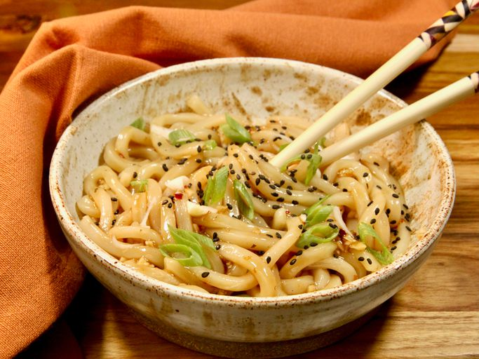

Home
Spicy Garlic Udon Noodles

These spicy garlic udon noodles are chewy and savory with a garlicky spicy sauce, and a winner for a quick weekday meal.
If you want to jazz them up even more, serve topped with a fried egg or stir in some sautéed shrimp.
Ingredients:
- 4 garlic cloves, finely minced
- 2 tablespoons soy sauce
- 2 tablespoons hoisin sauce
- 2 teaspoons sesame oil
- 1/2 teaspoon crushed red pepper flakes, or to taste
- 2 (8 ounce) blocks frozen udon noodles
- 1 tablespoon sliced green onions
- 1 teaspoon toasted sesame seeds
Steps:
- Prepare the sauce by combining garlic, soy sauce, hoisin, sesame oil, and red pepper flakes in a small bowl; set aside.
- Bring a large pot of water to a boil, and add udon blocks. Let them sit in the water until they start to unwind, 1 to 2 minutes. Noodles should remain a little chewy. Drain noodles, and return to the pot.
- Add sauce, and stir until noodles are well coated. Move to a serving dish, garnish with sliced green onions and sesame seeds, and serve.